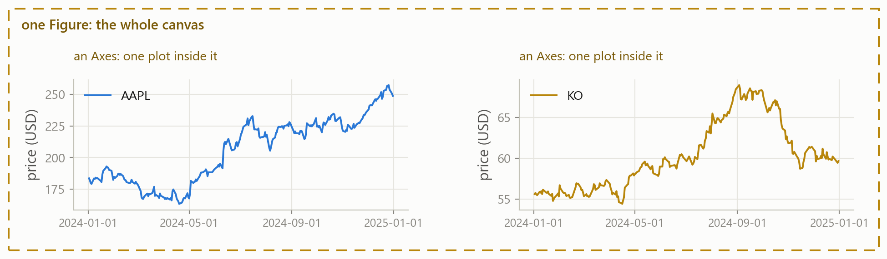
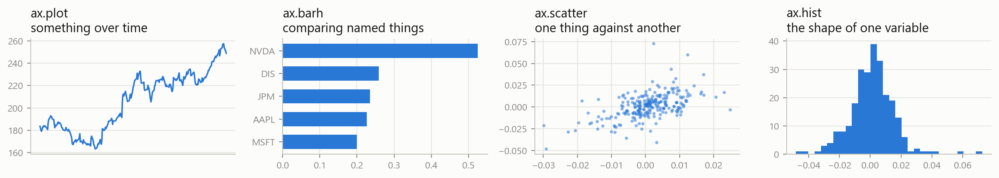
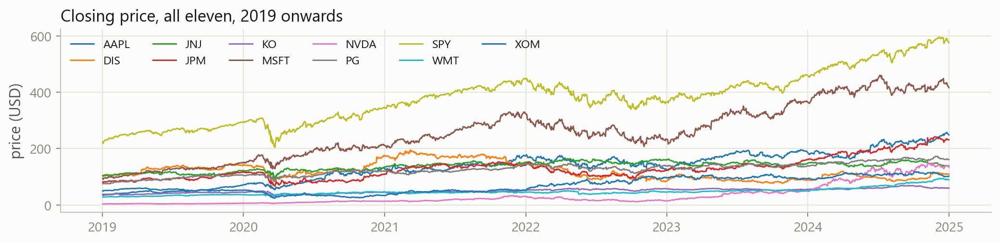
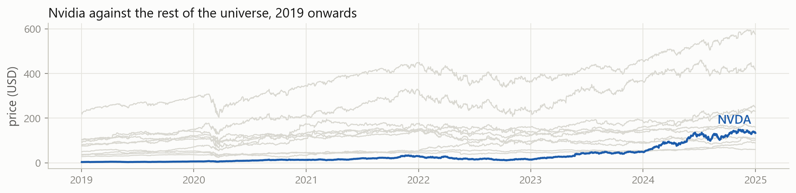
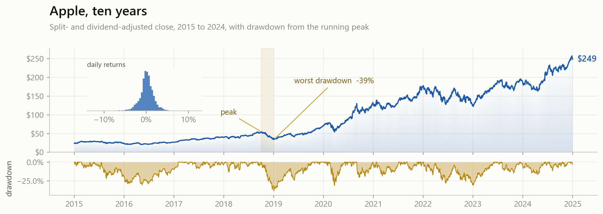
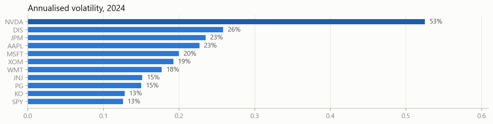

ticker
NVDA 0.0306
AAPL 0.0179
DIS 0.0175
XOM 0.0175
JPM 0.0172
MSFT 0.0171
WMT 0.0133
PG 0.0116
JNJ 0.0114
KO 0.0112
SPY 0.0111Machine Learning in Finance · Session 3
Volatility for one stock, built by hand out of loops:
The real data is one file: eleven stocks, ten years, 27,676 rows.
date,ticker,close,volume
2015-01-02,AAPL,24.1926,212818400
2015-01-05,AAPL,23.5111,257142000
...
2024-12-31,XOM,102.3799,11302800With lists and loops you would first have to split every line at the commas, turn the text into numbers, and sort the rows into eleven separate lists. All before computing anything.
ticker
NVDA 0.0306
AAPL 0.0179
DIS 0.0175
XOM 0.0175
JPM 0.0172
MSFT 0.0171
WMT 0.0133
PG 0.0116
JNJ 0.0114
KO 0.0112
SPY 0.0111None of that is meant to make sense yet. It is where we are going.
A package is code somebody else wrote, that you can use by name. Three of them do most of the work in data analysis:
NumPy numbers, vectors and matrices, and the maths on them
pandas tables with named columns, like a spreadsheet you can program
matplotlib figures, so you can see what you found
There are thousands of others, and you will meet more of them as the course goes on, including scikit-learn, the one that fits models.
Packages are not part of Python. Somebody has to install them, and in Colab somebody already did.
At the exam you sit with your own laptop, VS Code, and no internet. So today starts there: your machine, your packages, and how to look things up when you cannot search for them.
By the end of this session you can:
And the case reaches all eleven stocks at once.
Part 1
VS Code, packages, and finding things out without the internet.
Colab still works, and the homework stays there. But:
The exam three hours, your laptop, VS Code, offline. It should not be the first time.
The editor helps you it completes names and shows documentation as you type
It is yours your files, your packages, nothing to upload, no session that expires
No internet needed once it is installed, it works on a train
The commonest confusion is thinking VS Code is Python. It is not:
The setup guide installs all three.
VS Code opens .ipynb files: the same cells, the same Run buttons, the same output underneath as in Colab.
Nothing about how you write code changes. Only where it runs. The exam is written in a notebook too.
The first time you open one, VS Code asks which Python to use. Pick the one you installed, and it remembers.
Packages come from a public archive called PyPI. You install one once, and then it is on your machine for good:
Run that in a notebook cell, like any other code. The % marks it as an instruction to the notebook rather than to Python. Your setup guide already installed the three we need, so you should not have to type it at all today.
Installing and importing are different. You install a package once, ever. You import it in every notebook that uses it.
import brings a package in. as gives it a short name:
np, pd and plt are conventions, not rules. Everybody uses them and every tutorial assumes them, so use them too.
ModuleNotFoundError: No module named 'pandas'Python is telling you the truth: it looked, and it is not there. Install it, then run the import again.
Same habit as Session 1. The message names the thing that is missing.
mlfin/
├── analysis.ipynb
└── data/
└── prices.csvNo upload step any more. If Python says FileNotFoundError, the file is somewhere other than where you said. Open the folder in VS Code, not just the file, and the paths work.
pandas has hundreds of functions, each with its own arguments. Nobody memorises them, and professionals look things up all day. At the exam you have no internet.
Two things cover you. Before the exam I will give you a cheatsheet with every function you are likely to need. And the documentation for each package is already inside the package, on your machine.
The cheatsheet is on the course page, under Cheatsheet: every function we have used, with a worked example of each.
Rest the mouse on any name:
That card is not from the internet. It is the text that ships inside pandas, the same text help() prints.
For learning something new, rather than recalling a detail, the websites are much better. They have a written guide, worked examples, and pictures:
docs.python.org for the language itselfnumpy.org/doc for arrays and linear algebrapandas.pydata.org/docs for tablesmatplotlib.org for figures, including a gallery of example chartsUse these at home while you work. They are also downloadable as a single file, if you want them offline. All of them, and more, are linked from Resources on the course page.
Part 2
Arrays: doing arithmetic to a whole list at once.
Your volatility is a standard deviation, and standard deviations have been written many times before:
Writing it yourself was how you learned what it means. From now on you use the version that is already written, tested and fast.
An array is NumPy’s version of a list: same idea, all numbers, and the whole thing moves at once.
You build it from a list, and you index and slice it exactly like a list. Everything from Session 1 still works.
Here is the difference. Multiply an array, and every element is multiplied:
No loop, no empty list, no .append. In Session 2 this was three lines.
Position by position: 100-1, 200-2, 300-3.
Slicing from Session 1, plus that arithmetic:
close[1:] is every day from the second. close[:-1] is every day except the last. Subtracting them lines each day up against the day before.
The arrows show the pairing: each day is lined up against the day before it, which is exactly what the subtraction does.
The things you built by hand in Session 2 are already there:
returns.std() is your whole volatility function.
Compare an array to a number, and you get an answer for each element:
This is the Session 2 if, applied to everything at once instead of one item at a time inside a loop.
Adding up True and False counts the Trues, because True counts as one. That is the up-day counter from Session 2, in one line.
Daily volatility is a small number. Finance quotes it per year, by multiplying by the square root of the number of trading days:
So Apple’s 1.4% a day is about 23% a year. You will see np.sqrt(252) a lot.
Compute the daily returns from these prices.
Four returns from five prices: +2.0%, -1.0%, +3.0%, -0.5%.
So far, one row of numbers. NumPy’s other subject is the matrix: rows and columns of them.
You have done all of this maths in econometrics. Nothing on the next few slides is a new idea. What is new is that each one takes a single line.
Vector A row or column of numbers. One stock’s returns, or a set of portfolio weights.
Matrix A rectangle of numbers, n rows by p columns. One row per observation.
Transpose Flip rows and columns. An n × p becomes a p × n.
Dot product Multiply pairwise, then add up. Weights times returns is a portfolio return.
Matrix product Only fits if the first one’s columns match the second one’s rows.
Inverse The matrix that undoes another one. Exists only if no column is redundant.
Three rows, two columns. shape always tells you which is which.
[row, column], and : means “all of them”. The same slicing as a list, once per direction.
.T flips it:
A 3 by 2 becomes a 2 by 3. You use this constantly, because it is how you make two shapes fit together.
Multiply pairwise and add up. In finance that is a portfolio return: weights times returns.
0.5 × 0.012 + 0.3 × (-0.004) + 0.2 × 0.008. The @ symbol is matrix multiplication, and for two vectors that is the dot product.
@, on a matrixThree rows in, three numbers out: one per row. That is a regression’s fitted values, for the whole sample in one go.
Nearly every NumPy error you will ever see is this rule.
np.linalg.inv gives the matrix that undoes another one:
The result is the identity: ones down the diagonal, zeros elsewhere. The off-diagonal one prints as something like -1.11e-16, which is scientific notation for a decimal point followed by fifteen zeros and a 111. Computers store decimals approximately, so a value that should be exactly zero often comes out this tiny instead. Read it as zero.
LinAlgError: Singular matrixThe second column is just twice the first, so it adds nothing.
You have met this before under another name: perfect multicollinearity, the regression that will not run.
Your econometrics course wrote the estimator like this:
\[ \hat{\beta} = \left(X'X\right)^{-1} X'y \]
Read it against the formula: X.T is X', @ is multiplication, and solve does the inverting and multiplying in one safer step.
Apple’s daily return against the market’s. The slope is the beta you know from the CAPM:
Change the ticker and run it again: Nvidia gives 1.75, JPMorgan 1.12, Coca-Cola 0.60. Above one moves more than the market, below one moves less.
Squaring a million numbers, first with a loop and then with an array:
import time
xs, arr = list(range(1_000_000)), np.arange(1_000_000)
t0 = time.perf_counter()
total = 0
for v in xs:
total += v * v
loop = time.perf_counter() - t0
t0 = time.perf_counter()
total = (arr * arr).sum()
vec = time.perf_counter() - t0
print(f"loop: {loop:.3f} s numpy: {vec:.4f} s {loop / vec:.0f} times faster")loop: 0.081 s numpy: 0.0024 s 34 times fasterNumPy hands the whole array to compiled code, instead of stepping through it one Python statement at a time.
Part 3
Tables with names on the columns.
NumPy gives you numbers in a grid. pandas puts labels on that grid:
Series one column of values, each with a label. A list and a dictionary at once.
DataFrame several Series side by side, sharing one index. A spreadsheet you can program.
Built straight from a Session 2 dictionary.
That combination is the whole reason pandas exists.
Columns have names, and different columns can hold different types.
In Sessions 1 and 2 the data arrived in a cell somebody wrote for you. Not any more:
.head() shows the first five rows. parse_dates turns that column from text into real dates, which is what lets you sort and slice by time later.
27,676 rows and 4 columns, and dtypes says what each column holds. A price column that arrived as text is a common and silent bug.
A name in square brackets gives back a Series: that column, with its row labels kept.
A list of names inside the brackets gives a smaller DataFrame:
One set of brackets for the indexing, one for the list. That is why there are two of them.
A condition gives True or False for every row, just as in NumPy. Put it in brackets to keep the True ones:
27,676 rows tested at once.
Assign to a name that does not exist yet, and it appears:
.pct_change() is the daily return: the shift-and-divide you have now written by hand twice.
.copy()Leave it out, and pandas complains:
SettingWithCopyWarning: A value is trying to be set on a copy of a
slice from a DataFrame.aapl might be a window onto prices rather than a table of its own, so pandas cannot tell whether you also meant to change the original. .copy() says “give me my own table”, and the warning goes away.
The first day has no day before it, so its return is NaN, “not a number”:
NaN means “no value here”. It is not zero and it is not an error, and most summary methods skip it for you.
Ten years of Apple: about 1.8% on a typical day, 28% a year. Your Session 2 case found 1.4% for 2024 alone, which was a calmer year.
Apple’s three worst days in ten years, dates and all.
Pick out Coca-Cola, then read off its daily volatility.
About 0.0112, so 1.1% a day against Apple’s 1.8%. The comparison you began in Session 1 with two hand-picked prices, now over ten years.
Doing that eleven times would be eleven copies of the same code. Instead, group by ticker and let pandas handle each group:
The Session 2 loop, written once.
Split, apply, combine. You will see this shape everywhere.
One row per stock. This is a risk report.
pivot reshapes the table: dates down the side, tickers across the top.
The tall shape is better for storing and grouping. This wide one is better for comparing stocks and for plotting, which is where we go next.
Every column gets its own returns, then its own standard deviation. The whole ranking, in one line.
Because the index is dates, you can slice it with dates:
.loc works with the labels you can see. There is also .iloc for positions, if you ever want “the last row” rather than a particular date.
Part 4
Drawing what you found, so somebody else can see it.

A Figure is the canvas; an Axes is one plot on it. Everything you draw, you draw on an Axes.
plt.subplots() hands you a figure and one axes. You draw on ax, and plt.show() displays it.
Without the title and the label this is just a wiggly line. color takes any colour name or hex code: change it and run the cell again.
label= on each line, then one ax.legend().
Give this plot a title and a y-axis label.
A tripling over the year, and a reader who can tell what they are looking at.

Four calls, and the question decides which one you want. Everything else on a plot is decoration you add afterwards.
barh lays the bars down, which is the readable one when the labels are names. bar stands them up.
Most days are small moves near zero, with rare big ones out at the sides. bins is how many bars to chop the range into.
pandas will plot itself, and fills in the axis and the legend for you:
Good for a quick look while you work. Pass ax=ax and you can still add a title afterwards, exactly as before.

Eleven lines, eleven colours, and a legend you have to keep looking back at.

One line in colour, the rest in grey, and no legend to look back at.
Does it have a title? Say what the reader is looking at.
Are the axes labelled? With units. “price (USD)”, not “price”.
Can you tell the lines apart? A legend, or a name written on the line.
Do the bars start at zero? Lines need not. Bars must.
Is anything decorative? If it carries no information, remove it.
Would a stranger get it? Without you standing there to explain.

fig = plt.figure(figsize=(11, 4))
gs = fig.add_gridspec(2, 1, height_ratios=[3, 1], hspace=0.12)
ax, ax2 = fig.add_subplot(gs[0]), fig.add_subplot(gs[1], sharex=ax)
for a in (ax, ax2):
for side in ("top", "right"):
a.spines[side].set_visible(False)
ax.plot(s.index, s.values, color="#1c5cab", linewidth=1.5, zorder=3)
for i, alpha in enumerate(np.linspace(0.16, 0.01, 14)):
ax.fill_between(s.index, s.values * (i / 14), s.values * ((i + 1) / 14),
color="#1c5cab", alpha=alpha, linewidth=0, zorder=1)
ax.yaxis.set_major_formatter(mtick.StrMethodFormatter("${x:,.0f}"))
ax.axvspan(peak, trough, color="#b8860b", alpha=0.10, zorder=0)
ax.annotate("peak", xy=(peak, s.loc[peak]), xytext=(-52, 22),
textcoords="offset points", color="#7a5a08",
arrowprops=dict(arrowstyle="-", color="#c9a227"))
# ... and about thirty more lines for the drawdown panel, the inset
# histogram, the other annotations and the tick formattingEvery one of those lines is a small, ordinary call. There are just a lot of them, and none of them is the analysis.
Get the plot right, then make it pretty, and only if it is worth the time.
When you do want it prettier, go to the matplotlib gallery at matplotlib.org. It is a wall of example charts, each with the code that made it. Find the picture closest to what you want, and read how it was done.
That is how everybody learns plotting, including the people who do it for a living.
Now that you have a machine with folders on it:
dpi is the resolution and bbox_inches="tight" trims the empty margin. Use .pdf instead of .png for something that stays sharp at any size, which is what you want in a thesis.

Your own machine Install once, import in every notebook.
Looking things up Hover, or help. It is on your machine, not online.
NumPy Arrays do arithmetic all at once. @ for matrices.
pandas read_csv, filter, new columns, groupby, pivot.
matplotlib fig, ax = plt.subplots(), then label everything.
Judgment The form, the scale and the baseline decide what a reader sees.
The risk report grows from two stocks to the whole universe.
Load all eleven with pandas, compute returns and volatility for every one of them at once, and make the figures a reader could act on. Same investigation, no loops.
session_03_case.ipynb, done at home before Session 4:
prices.csv yourself, and check it before trusting itgroupbyHints and full solutions are folded into the notebook. Work first, then check.
session_03_exercises.ipynb: NumPy, pandas and matplotlib, plus practice at looking things up. Hints and solutions folded in.
session_03_case.ipynb: the risk report, all eleven stocks, with figures.
Next session: what machine learning actually is. Observations, features and targets, and why a model that fits your data perfectly is usually worthless.